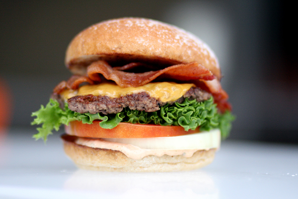

Burger Recipe

Description
A juicy burger with all the classic toppings.
Ingredients
- 1 lb ground beef
- 4 burger buns
- 1 tomato, sliced
- Lettuce leaves
- 4 slices of cheese
- Condiments (ketchup, mustard, mayo)
- Salt and pepper to taste
Steps
- Preheat grill or skillet to medium-high heat.
- Form ground beef into 4 equal patties. Season with salt and pepper.
- Cook patties for about 4-5 minutes per side, or until desired doneness.
- During the last minute of cooking, place a slice of cheese on each patty to melt.
- Toast the burger buns on the grill or skillet until golden brown.
- Assemble the burgers: place lettuce on the bottom bun, add the patty with melted cheese, top with tomato slices and condiments, then cover with the top bun.
- Serve immediately with your favorite sides.
Back to Home